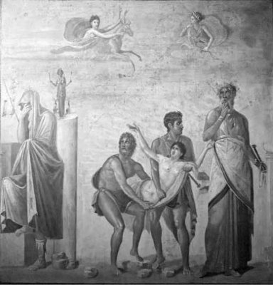

Troya kralı iyi yürekli Priyamos'la karısı kraliçe Hekabe; tanrı Apollon adına düzenledikleri bir şenlik sonunda bebekleri Kassandra'yla (Kassandra) ikizi Helenos'u her nasılsa tapınakta unutup gittiler... Akılları başlarına gelip de apar topar geri döndüklerinde, uykudaki bebeklerin gözlerini kulaklarını yalayan iki azman yılan gördüler. Bebekleri uzun uzun yalayan yılanlar, onların duyma ve ileri görme yetilerini bu yolla son derece güçlendirip keskinleştirmişti. Bu yüzden de büyüdüklerinde, kimsenin önceden göremediği ve sonucunu algılayamadığı olayları ve gerçekleri, daha başından duyabilme ve anlayabilme yetisini kazanmışlardı...
Gene genç kızlığında prenses Kassandra, yalnız başına tanrı Apollon'un tapınağına geldiği bir gün, Apollon ona aniden vuruldu ve dile gelip duygularını da açık açık söyledi... Doğrusu ya prenses de, ozan olduğunu ve çok iyi lir çaldığını bildiği bu yakışıklı tanrıya ilgisiz kalmadı!.. Artık yalnız başına ve kimselerin olmadığı zamanlarda tapınağa gelip gitmeye başladı. Ne var ki tanrı Apollon; çok daha ileri gidip Kassandra'ya aşkına yanıt vermesi karşılığında, "ileriyi görme ve olacakları önceden haber verebilme" yetisini bağışlayacağını, böylece bir çeşit tanrısal etkinlik kazanacağını söyledi... Aklını kullandığı sürece bilicilik yönünden kendisini zaten yetkili gören Kassandra; tanrının bu önerisine iş olsun gibilerden olur dedi ve Apollon da ona bilicilik yetisini bağışladı. Ne var ki Kassandra; bu yeteneği elde etmenin bedeli olan aşkını verme sözünü tutmadı... Çünkü zaten bilici olduğu için tanrı Apollon ona fazladan bir şey vermiş olmuyordu! Kassandra bunu açık açık Apollon'un yüzüne karşı da söyledi... Bir ölümlü kadının buncasına açık ve isyancı tutumuna çok öfkelenen Apollon, tutup ağzına tükürdü güzel Kassandra'nın! Bu yüzden Kassandra o olağanüstü geleceği bilme yetisini yitirmedi yitirmemesine, ama bütün öngördüğü şeyleri açıkladığında, kimseler onu dinlemez oldu. İleride yaşanacak kötü şeyleri nice yırtına yırtına anlatmaya çalışsa da, karşısındakilerin hep sağır duvarlarına çarpmaya başladı artık bütün öngörüleri. Bunlardan en yıkımcıl olanı da Paris'le evlenen güzel Helena konusundaki görüşleriydi... Kardeşi Paris'in daha yeni doğduğu günlerde sarayın bilicisi, bu çocuğun gün gelip Troya'nın ve halkının başına nice yakımlar yıkımlar getireceği uzgörüsünde bulunmuştu. Bunun üzerine anası kraliçe Hekabe de bu bebeği Kazdağları'na götürüp orada yaşayan çobanların, geyiklerin, kurtların, kuşların insafına bırakıp gelmişti... Bu yüzden Paris, Kazdağları'nda geçirmişti çocukluğunu ve ilk gençliğini. Delikanlı olunca da gezmek için gittiği Yunanistan'da, tanrıça Afrodit'in aracılığıyla kendine âşık ettiği Yunanistanlı güzel Helena'yla Troya'ya dönmek istediği haberini saldı. Bu kez kız kardeşi Kassandra, Helena'nın saraya alınmamasını istedi... Çünkü onun hem saraya, hem de Troya'ya yıkımlar ve yakımlar getireceğini söyledi yeniden. Ama kimseler kulak asmadı uyarılarına!.. Haliyle Paris'le Helena da gelip Troya sarayına yerleştiler...
Ama gene de Kassandra, Troya'yı bekleyen kötülükleri önleyebilmek için rahip Laokon'la birlikte krallığın en etkin kişilerini de yanına alarak, Helena'nın geri verilmesi konusunda sayısız girişimlerde bulundu. Ama kimselere sözünü geçiremedi!. Ne var ki hem kendinin hem başkalarının başına geleceğini sezinlediği bütün yıkımlar, zaman içinde bir bir gerçekleşti. Örneğin Hektor'un da Paris'in de o uğursuz Troya savaşında öldürüleceklerini söylemişti; uzgörüleri bir bir gerçekleşti...
Gene savaşın onuncu yılında da, kesinlikle surlardan içeri alınmamasını önerdiği ama gene de kente büyük törenlerle alınan içi asker dolu tahta at, Troya'nın sonunu getirdi! Geceleyin atın karnından çıkan askerler, ülkeyi içeriden ele geçirdiler. Böylece Yunanistan'dan gelen yağmacı ordular; bir yandan krallığın hazinelerini yağmalarken öte yandan güzel genç kızları, kadınları köle ve kuma olacak şekilde derleyip toparlamaya başladılar. Bu hengâmede Kassandra da, ardısıra koşarak gelen Yunanlı Ayas'ın elinden kurtulabilmek için tanrıça Atena'nın tapınağına sığındı. Bu kez tapınağa giren Ayas'ın eline düşmemek için tanrıçanın mermer bedenine sıkı sıkıya sarıldı. Ama gözü dönmüş Ayas onu zorla heykelden sıyırıp aldı; hemen orada kirletti! Tanrıça Atena'nın heykeli bile, olup bitenleri görmemek için, başını başka yöne çevirdi! Ne var ki savaş süresince hep Yunanlıların tarafını tutmuş olan Atena, daha sonra bunun öcünü yaman alacaktı onlardan...

İfigeneya; babası Agamemnon'un da yardımıyla, tanrılara kurban edilmek üzere götürülürken ve annesi Klütaymestra sessiz sessiz ağlarken
Diğer güzel kadın tutsaklarla birlikte gemilere doldurulurken Kassandra, Yunanistanlı Başkral Agamemnon'un çok ilgisini çekti. Uzun süre bakışlarını ayıramadı. Artık bu soylu Troyalı prensesin güzelliğine vurulan Başkral, en değerli savaş ganimeti olarak onu Mükene'deki karısı Klütaymestra'ya kuma ve köle olarak götürmeye karar verdi...
Kısa sürede talan edilmiş hazineler ve güzel kadınlarla genç kızlarla tıkabasa doldurulan gemiler, tanrıların yalan rüzgârlarıyla şişine şişine Yunanistan'a doğru geri dönerken Kassandra; saraya vardıklarında başlarına gelecekleri bir bir anlattı Başkral Agamemnon'a. "Saraya varır varmaz karın Klütaymestra ikimizi de öldürecek!" dedi.
Agamemnon da güzel kölesi Kassandra'nın bu uzgörülerine kahkahalarıyla yanıt verdi.
Çünkü bu talan savaşını kazanmak uğruna her şeyi yapabileceğini kanıtlamak için nice özverilerde bulunmuştu Başkral! Örneğin öz kızı masum İfigeneya'yı bile karısı Klütaymestra'nın ve de orduların gözleri önünde, hem de kendi elleriyle tanrıça Artemis'e kurban etmişti! Gerçi namus temizleme amacıyla başlattığı bu ilk kıtalararası savaş sonunda, savaşın nedeni güzel Helena'yı Troya'da unutmuştu unutmasına, önemli değildi. Çünkü bundan böyle dünya imparatoruydu artık! Ve tanrılarla içli dışlıydı... Ne var ki binyıllar süresince dünya halklarının bile göremeyeceği bir gerçeği; yani bu savaşın bir yağma savaşı olduğu gerçeğini, Mükene sarayında oturan karısı Klütaymestra çok iyi görmüştü... O yüzden Kassandra'nın uzgörüde bulunduğu gibi, saraya vardıkları gün kraliçe Klütaymestra; kanına girdiği öz kızı İfigeneya'nın ve bütün Yunanistanlı, Troyalı nice masum yiğitlerin öcünü almak üzere, yıllardır kiniyle bilediği hançerini, kocası Agamemnon'un sırtına, ardı ardına sapladı...